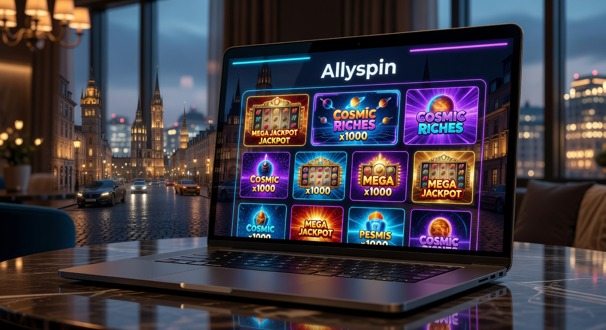
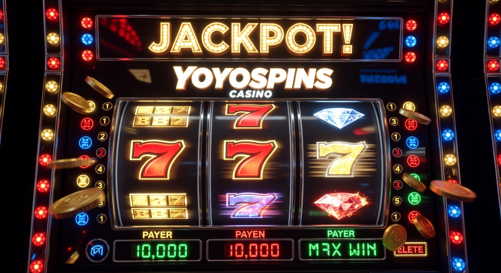

Guida ai Migliori Casino Online Europei del 2026: Sicurezza e Innovazione
Il panorama del gioco d'azzardo digitale ha subito una trasformazione radicale negli ultimi dodici mesi. Entrando nel vivo del 2026, i casino online europei rappresentano oggi l'apice dell'innovazione tecnologica e della protezione per l'utente, superando le aspettative dei giocatori più esigenti. Queste piattaforme non si limitano a offrire intrattenimento, ma implementano soluzioni di intelligenza artificiale per garantire un ambiente equo e trasparente.
Per gli appassionati che cercano un'esperienza di alto livello, i casino online esteri offrono vantaggi competitivi in termini di quote, velocità dei prelievi e varietà del catalogo. Nel 2026, la distinzione tra operatori locali e internazionali si è fatta sempre più sottile, poiché gli standard di sicurezza europei sono diventati un riferimento globale imprescindibile.
In questo contesto, la scelta di un portale affidabile richiede un'analisi approfondita delle licenze e delle tecnologie di crittografia utilizzate. Molti utenti si orientano verso i migliori casino online stranieri per accedere a mercati di gioco più ampi e a software innovativi che spesso arrivano in anteprima su questi circuiti internazionali prima di essere distribuiti su scala locale.
Analizzando la vasta lista casino stranieri attualmente disponibili, emerge come la qualità del servizio clienti e l'integrazione di sistemi di pagamento istantanei siano i veri fattori differenzianti. La competizione tra i casino online europei ha spinto le aziende a migliorare costantemente l'interfaccia utente, rendendo l'esperienza di navigazione fluida e intuitiva sia da desktop che da dispositivi mobile.
L'evoluzione tecnologica nel settore del gioco digitale nel 2026
Nel corso del 2026, abbiamo assistito all'integrazione definitiva della realtà aumentata all'interno dei tavoli dal vivo. I casino online europei sono stati i pionieri di questa transizione, permettendo ai giocatori di interagire in ambienti virtuali che replicano fedelmente l'atmosfera delle sale più prestigiose di Monte Carlo o Malta. Questa evoluzione non è solo estetica, ma incide profondamente sulla fiducia dell'utente.
Un altro aspetto fondamentale riguarda la sicurezza delle transazioni. L'adozione massiccia di protocolli basati su blockchain ha reso i depositi e i prelievi estremamente sicuri. Cercando tra i casino online stranieri, è ormai comune trovare opzioni che garantiscono l'anonimato e la tracciabilità totale delle giocate tramite smart contract, un elemento che rassicura chiunque desideri giocare in totale serenità.
I casino stranieri che accettano italiani nel 2026 devono rispettare rigorosi criteri di gioco responsabile. Non si tratta solo di conformità legale, ma di una vera e propria missione aziendale che prevede l'uso di algoritmi predittivi per identificare comportamenti a rischio prima che diventino problematici. Questo approccio etico ha elevato il prestigio dei casino online europei agli occhi delle istituzioni internazionali.
L'accessibilità è stata ulteriormente semplificata. Mentre in passato la burocrazia poteva scoraggiare, oggi alcuni operatori permettono una verifica rapida dell'identità. Ad esempio, la possibilità di utilizzare il casino registrazione spid ha velocizzato enormemente l'ingresso nelle piattaforme regolamentate, garantendo al contempo che i dati personali siano trattati con i massimi standard di privacy europei.
Allyspin

Allyspin si è affermato come uno dei leader indiscussi tra i casino online europei grazie a un approccio fortemente orientato alla personalizzazione dell'utente. Lanciato con l'obiettivo di rivoluzionare il concetto di fedeltà, questo operatore utilizza un motore di intelligenza artificiale che suggerisce titoli in base alle reali preferenze del giocatore, evitando la dispersione in cataloghi troppo vasti.
La piattaforma vanta una libreria che supera i 5.000 titoli, forniti dai principali produttori globali. La qualità dei migliori casinò si vede spesso dalla capacità di aggiornare costantemente l'offerta, e Allyspin non fa eccezione, introducendo settimanalmente nuove slot machine e varianti di giochi da tavolo classici. La fluidità del sito è garantita da un'infrastruttura server all'avanguardia situata nei principali hub tecnologici dell'Unione Europea.
Un punto di forza di Allyspin risiede nella gestione del bonus di benvenuto. A differenza di molti concorrenti, i termini e le condizioni sono scritti in modo chiaro e trasparente, eliminando clausole vessatorie o requisiti di scommessa impossibili da raggiungere. Questa onestà intellettuale ha permesso al brand di scalare rapidamente la classifica dei migliori casino online stranieri preferiti dai veterani del settore.
Per quanto riguarda l'assistenza, Allyspin offre un supporto multilingue disponibile 24/7. Che si tratti di un dubbio tecnico su una sessione di gioco o di una richiesta relativa ai metodi di pagamento, il team di esperti risponde mediamente entro due minuti tramite live chat, un parametro che definisce l'eccellenza nel 2026.
| Caratteristica | Dettaglio |
|---|---|
| Licenza | Malta Gaming Authority (MGA) |
| Numero di Giochi | 5000+ |
| Tempo di Prelievo | Istantaneo (tramite Crypto o SEPA Instant) |
| App Mobile | Disponibile per iOS e Android |
| Supporto Clienti | Live Chat 24/7 e Email |
L'esperienza su Allyspin è arricchita da continui tornei interni che mettono in palio non solo premi in denaro, ma anche giri gratis utilizzabili sulle ultime novità del mercato. Questo crea una community attiva e vibrante, dove i giocatori possono confrontarsi e competere in un ambiente sano e monitorato. La presenza di Allyspin nella nostra lista casino stranieri è giustificata da una coerenza qualitativa che dura ormai da diversi anni.
Inoltre, l'integrazione con i sistemi di pagamento più moderni permette di gestire il proprio budget in modo granulare. Allyspin supporta oltre 20 diverse valute e diverse tipologie di pagamento digitali, assicurando che ogni utente trovi la soluzione più comoda per le proprie esigenze finanziarie, nel pieno rispetto delle normative antiriciclaggio vigenti nell'area Euro.
Malinacasino
Malinacasino rappresenta l'eleganza fatta portale. Sin dal suo debutto, ha puntato su un'estetica raffinata ispirata ai classici casino online europei, pur mantenendo un cuore tecnologico estremamente moderno. La navigazione è studiata per ridurre al minimo i clic necessari per raggiungere la propria sezione preferita, un dettaglio non trascurabile per chi gioca principalmente da smartphone.
La selezione di giochi su Malinacasino è curata meticolosamente. Non si punta solo sulla quantità, ma sulla qualità delle produzioni. Collaborazioni esclusive con studi indipendenti permettono a questo operatore di offrire titoli unici che non si trovano altrove, rendendolo una scelta prioritaria per chi cerca "casino online stranieri" con contenuti originali e alto potenziale di vincita (RTP superiore al 97%).
Uno degli aspetti più apprezzati di Malinacasino è il suo programma VIP. A differenza dei programmi standard, qui i premi sono reali ed esperienziali: dagli inviti a eventi sportivi internazionali ai gadget tecnologici di ultima generazione. Questo livello di attenzione al cliente è ciò che distingue i migliori casino online stranieri dalla massa, creando un legame di fiducia duraturo con l'utenza.
Nel 2026, la sicurezza informatica è la priorità assoluta. Malinacasino utilizza sistemi di crittografia a 256 bit e controlli biometrici opzionali per l'accesso ai conti di gioco. Questo posiziona la piattaforma tra i più sicuri casino online europei disponibili oggi, garantendo che i dati sensibili e i fondi dei giocatori siano protetti da qualsiasi minaccia esterna.
- Interfaccia Utente: Design minimalista e tempi di caricamento inferiori al secondo.
- Varietà del Catalogo: Oltre 400 tavoli di casinò live con croupier professionisti.
- Promozioni: Bonus settimanali di ricarica e cashback fino al 15% sulle perdite.
- Pagamenti: Supporto completo per portafogli elettronici, carte e trasferimenti bancari rapidi.
I giocatori italiani trovano in Malinacasino un partner affidabile. Essendo uno dei casino stranieri che accettano italiani con maggiore storia alle spalle, ha saputo adattare la propria offerta alle specificità del nostro mercato, offrendo assistenza in lingua italiana e una localizzazione perfetta di ogni menu e regolamento. La trasparenza è il pilastro su cui è costruito il successo di questo brand.
Chi cerca una vasta selezione di giochi rimarrà stupito dalla profondità delle categorie disponibili: dalle slot con jackpot progressivo multimilionario alle varianti più esotiche del blackjack e del baccarat. Ogni sessione di gioco è garantita da generatori di numeri casuali (RNG) certificati da enti terzi indipendenti, assicurando l'assoluta imparzialità dei risultati.
Wildtokyo
Wildtokyo si distingue per la sua tematica cyberpunk mozzafiato, che trasporta il giocatore in una metropoli futuristica ricca di adrenalina. È la scelta ideale per la generazione di utenti che vede i casino online europei non solo come luoghi di scommessa, ma come vere piattaforme di gaming gamificate. Qui, ogni puntata contribuisce a far salire di livello il proprio avatar, sbloccando potenziamenti e bonus esclusivi.
La rapidità è il mantra di Wildtokyo. Dalla registrazione al primo prelievo, tutto è progettato per essere istantaneo. Molti utenti lo citano come il punto di riferimento quando si parla di casino online esteri capaci di evadere le richieste di pagamento in meno di 15 minuti. Questo è reso possibile da un reparto finanziario automatizzato che opera 24 ore su 24, riducendo drasticamente i tempi di attesa burocratici.
L'offerta promozionale è tra le più ricche del 2026. Il bonus di benvenuto di Wildtokyo è strutturato su più depositi, permettendo ai nuovi iscritti di testare la piattaforma con un bankroll considerevolmente aumentato. A questo si aggiungono frequenti pacchetti di giri gratis che vengono erogati in occasione del lancio di nuovi titoli di punta, incentivando l'esplorazione del catalogo.
Wildtokyo è profondamente integrato con l'ecosistema digitale moderno. Per chi cerca i migliori casinò online dal punto di vista dell'innovazione, la possibilità di connettere il proprio account a dispositivi indossabili per ricevere notifiche in tempo reale sulle vincite o sui tornei imminenti rappresenta un unicum nel settore dei casino online europei.
Sicurezza e Regolamentazione su Wildtokyo
Nonostante l'aspetto aggressivo e moderno, Wildtokyo prende molto seriamente la conformità normativa. Opera con una licenza internazionale che garantisce la protezione dei fondi in conti segregati. Questo significa che il denaro dei giocatori è sempre al sicuro e separato dai fondi operativi dell'azienda, una garanzia fondamentale offerta dai più seri casino online stranieri.
Il gioco responsabile è supportato da strumenti di auto-limitazione avanzati. L'utente può impostare limiti giornalieri, settimanali o mensili non solo sulle perdite, ma anche sul tempo trascorso sulla piattaforma. Questo approccio proattivo dimostra come i casino online europei di nuova generazione siano impegnati nella salvaguardia del benessere psicologico dei propri utenti.
La sezione "Live Casino" merita una menzione speciale. Wildtokyo collabora con fornitori del calibro di Evolution e Pragmatic Play per offrire flussi video in 4K e un'interazione con i dealer che non ha nulla da invidiare a un'esperienza fisica. È questa combinazione di atmosfera e tecnologia a renderlo uno dei casino stranieri che accettano italiani più apprezzati dell'anno in corso.
Yoyospins casinò

Yoyospins casinò è l'ultima grande rivelazione nel panorama dei casino online europei. Fondato da un gruppo di esperti del settore IT, il sito nasce con l'idea di eliminare tutto ciò che è superfluo, concentrandosi sulla purezza dell'esperienza ludica. L'architettura del sito è ottimizzata per il risparmio energetico dei dispositivi mobili, un tema molto caro agli utenti del 2026.
La varietà delle opzioni di pagamento è uno dei pilastri di Yoyospins. Oltre ai circuiti tradizionali, la piattaforma accetta una vasta gamma di stablecoin e valute digitali, rendendola una delle destinazioni preferite per chi cerca un casino online esteri all'avanguardia finanziaria. La stabilità del sistema garantisce transazioni fluide anche nei momenti di picco di traffico.
Il catalogo di giochi è incentrato sulle slot machine ad alta volatilità, molto amate dai giocatori professionisti. Tuttavia, Yoyospins non dimentica i neofiti, offrendo una sezione "scuola di gioco" dove è possibile imparare le strategie dei principali giochi da tavolo senza rischiare denaro reale, utilizzando versioni demo complete in ogni loro parte.
Yoyospins si è guadagnato un posto d'onore nella nostra lista casino stranieri grazie a una politica di cashback giornaliero senza requisiti di puntata. Questo significa che una parte delle giocate viene restituita direttamente sul saldo prelevabile, un incentivo concreto che pochi altri casino online europei possono permettersi di offrire con tale frequenza.
| Categoria | Vantaggio Esclusivo |
|---|---|
| Tecnologia | Caricamento istantaneo su reti 5G e 6G |
| Bonus | Nessun limite massimo di vincita dai bonus |
| Giochi | Esclusive "Yoyo Originals" prodotte internamente |
| Privacy | Opzione di gioco senza tracciamento cookies |
La reputazione di Yoyospins come uno dei migliori casinò è confermata dalle numerose recensioni positive lasciate dagli utenti sui forum specializzati. La trasparenza nel comunicare le percentuali di vincita e la velocità nel risolvere eventuali controversie hanno creato un clima di fiducia reciproca. In un mercato saturo di offerte, la chiarezza di Yoyospins è una boccata d'aria fresca.
Infine, l'integrazione con sistemi di identità digitale avanzati permette un processo di verifica quasi impercettibile. Per chi desidera casino online stranieri che accettano italiani senza dover inviare decine di documenti cartacei, Yoyospins rappresenta la soluzione ideale, coniugando legalità e semplicità d'uso in un unico portale d'eccellenza europea.
Analisi della sicurezza nei casino online europei del 2026
La sicurezza è diventata il criterio principale per valutare la qualità di un operatore digitale. Nel 2026, i casino online europei devono sottostare a normative ancora più stringenti rispetto al passato, che includono test periodici di penetrazione informatica e audit esterni sui flussi finanziari. Questo garantisce che ogni euro depositato sia protetto da standard di livello bancario.
Gli utenti che cercano i migliori casino online stranieri sanno che la presenza di una licenza valida (come quella della MGA o della Gaming Curaçao aggiornata al 2026) è il primo segnale di affidabilità. Secondo quanto riportato da fonti autorevoli come la Wikipedia sul gioco online, la regolamentazione europea è una delle più avanzate al mondo per la tutela del consumatore.
Un elemento chiave è la protezione dei dati personali. I casino online stranieri che operano legalmente in Europa sono tenuti a rispettare il GDPR e le sue successive evoluzioni del 2026. Questo significa che il giocatore ha il pieno controllo sulle proprie informazioni e può richiederne la cancellazione o la portabilità in qualsiasi momento, un diritto fondamentale che eleva la qualità del servizio offerto.
Anche i meccanismi di gioco sono sotto costante osservazione. Le autorità europee verificano che il software non sia manipolabile e che le probabilità di vincita dichiarate corrispondano a quelle effettive. Questo monitoraggio continuo rende i casino online europei un porto sicuro per chi cerca onestà e trasparenza nel mondo delle scommesse digitali.
Per approfondire le normative attuali, è possibile consultare i siti ufficiali delle autorità di controllo, come la Malta Gaming Authority, che fornisce dettagli aggiornati sulle licenze emesse e sulle garanzie offerte ai giocatori internazionali. Queste risorse sono fondamentali per chiunque voglia fare una scelta informata e consapevole nel 2026.
Conclusione sulla scelta dei casino online europei
In conclusione, il mercato dei casino online europei nel 2026 offre opportunità senza precedenti. Che si tratti della vastità dei cataloghi di Allyspin, dell'eleganza di Malinacasino, dell'innovazione futuristica di Wildtokyo o della semplicità di Yoyospins, il denominatore comune è l'altissima qualità del servizio. La competizione ha portato a un miglioramento globale degli standard, a tutto vantaggio dell'utente finale.
Esplorando i vari casino online esteri, è chiaro che la tecnologia ha abbattuto le barriere, permettendo un'esperienza fluida e sicura a prescindere dalla localizzazione geografica dell'operatore. I giocatori italiani possono oggi accedere ai migliori casino online stranieri con la certezza di trovare ambienti regolamentati, bonus onesti e un'assistenza clienti di primo ordine.
È sempre consigliabile consultare una lista casino stranieri aggiornata prima di registrarsi, per essere sicuri di approfittare delle ultime offerte e delle piattaforme più performanti. Il gioco deve rimanere una forma di intrattenimento: scegliere i casino online europei giusti significa mettere la propria sicurezza e il proprio divertimento al primo posto.
Per ulteriori informazioni sulle dinamiche del mercato globale del gioco d'azzardo, testate giornalistiche internazionali come Forbes pubblicano regolarmente analisi sui trend economici e tecnologici che influenzano il settore, fornendo una visione d'insieme utile a comprendere dove sta andando il mondo dell'iGaming nel prossimo futuro.
Scegliere tra i casino stranieri che accettano italiani nel 2026 non è mai stato così gratificante. Grazie a strumenti come il login spid casino e a sistemi di pagamento ultra-rapidi, l'unico pensiero del giocatore rimane la strategia di gioco e il puro piacere della sfida. La maturità raggiunta dal settore è la migliore garanzia per un'esperienza di successo.
Domande frequenti
I casino online europei sono legali in Italia nel 2026?
Sì, i casino online europei che possiedono licenze riconosciute a livello internazionale operano legalmente nel mercato globale. I giocatori italiani possono accedere a queste piattaforme, a patto che gli operatori rispettino le normative sulla sicurezza e sul gioco responsabile vigenti nell'Unione Europea.
Quali sono i vantaggi di giocare sui casino online stranieri?
I principali vantaggi dei casino online stranieri includono una maggiore varietà di titoli, metodi di pagamento più moderni (come le criptovalute), bonus più generosi e limiti di deposito più flessibili. Inoltre, la tecnologia utilizzata è spesso più avanzata, offrendo un'esperienza utente superiore.
È sicuro depositare denaro su questi siti?
Certamente, a patto di scegliere operatori inclusi nella nostra lista dei migliori casino online stranieri. Questi siti utilizzano crittografia SSL di ultima generazione e protocolli di sicurezza bancari per garantire che ogni transazione sia protetta da accessi non autorizzati.
Come posso prelevare le mie vincite velocemente?
Per prelievi rapidi, si consiglia di utilizzare portafogli elettronici o criptovalute. Molti casino online europei nel 2026 elaborano le richieste in tempo reale, permettendo di ricevere i fondi sul proprio conto in pochi minuti, superando i tempi tecnici dei bonifici bancari tradizionali.
Cosa devo controllare prima di registrarmi?
Prima della registrazione, è fondamentale verificare la licenza dell'operatore, leggere i termini del bonus di benvenuto e assicurarsi che sia presente un servizio di assistenza clienti in lingua italiana. Consultare recensioni aggiornate del 2026 può aiutare a evitare piattaforme meno affidabili.
Esistono bonus senza deposito nei casino online esteri?
Sì, è frequente trovare offerte che includono piccoli bonus o giri gratis al momento della verifica del conto. Queste promozioni permettono di testare i software di gioco senza dover impegnare capitali propri, rappresentando un ottimo modo per valutare la qualità della piattaforma.